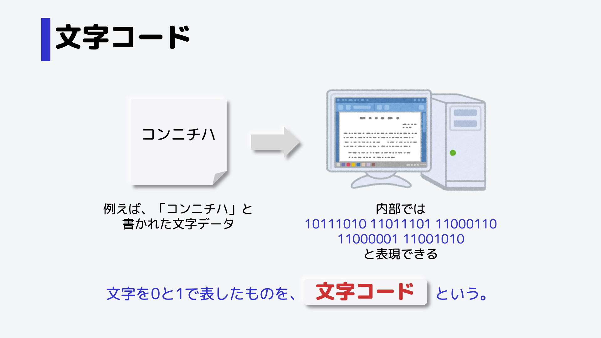
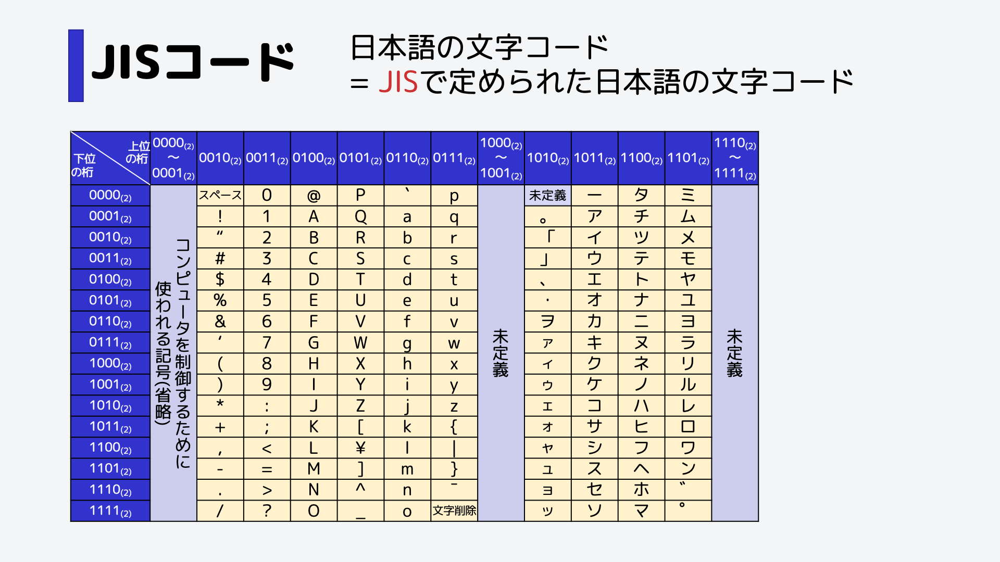

文字情報はどのように表されているか
コンピュータ内部では0と1だけを用いてデータを表します。
例えば「こんにちは」と書かれたデータも、内部的には0と1で表しています。
文字情報を0と1で表したものを、文字コードと言います。
文字コード表の見方
具体的な文字コードを紹介します。日本語用の文字コードの一つに、JIS(ジス)コードというものがあります。
カタカナの「ア」という文字コードを表現しましょう。
まず上位の桁のビットを確認します。
表より、「1011」であることがわかります。
次に、下位の桁のビットを確認します。
表より、「0001」であることがわかります。
これらを合わせ、10110001となります。